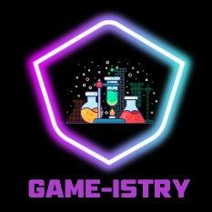

🎮 Game-istry
CompletedA 2D educational chemistry game built with Unity for secondary-school science-stream students. It explores Form 5 rate-of-reaction concepts through interactive virtual experiments.
Explore Game Project →